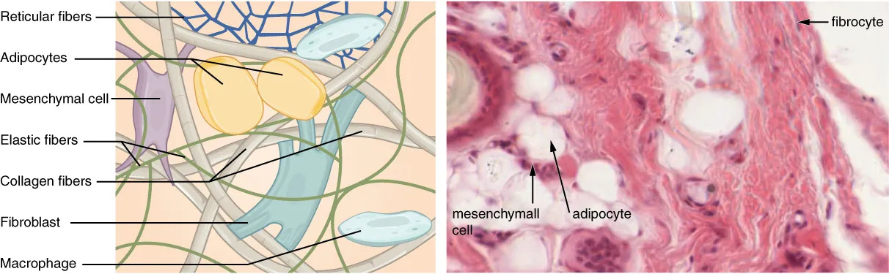
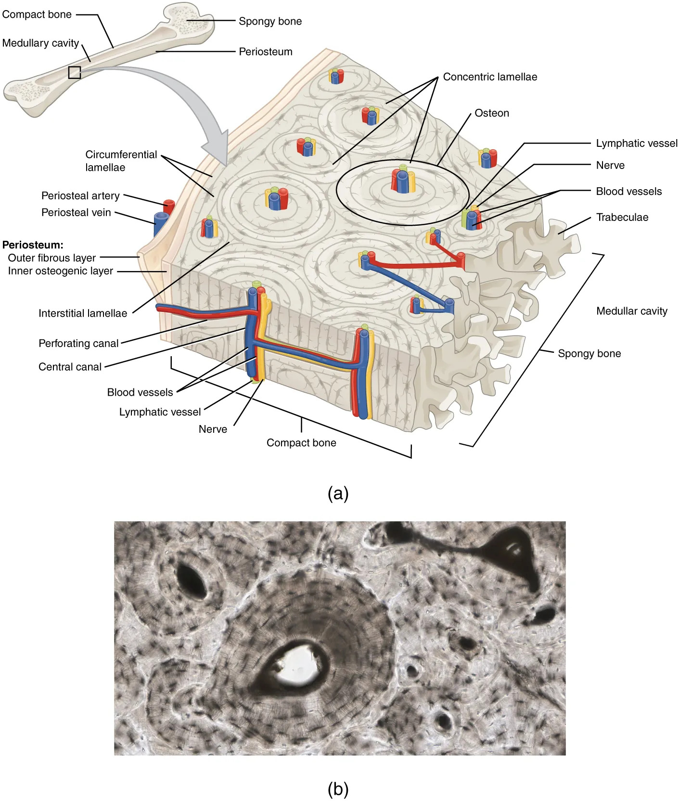

结缔组织由少量细胞和大量细胞间质构成，起支持、连接、保护、营养作用。
特点：
分类：固有结缔组织、软骨组织、骨组织、血液。
归属辨析：肌腱、韧带、软骨、骨、血液、淋巴均属于结缔组织；肌纤维（肌细胞）属于肌肉组织，不属于结缔组织——虽然肌纤维呈纤维状，但由中胚层肌节分化而来，结构和功能均与结缔组织不同。
| 类型 | 结构特点 | 功能与分布 |
|---|---|---|
| 疏松结缔组织 | 纤维交织疏松，细胞种类多（成纤维细胞、巨噬细胞、肥大细胞等） | 皮下、器官之间，起填充、营养、防御作用 |
| 致密结缔组织 | 胶原纤维密集排列，细胞少 | 肌腱、韧带、真皮，起连接、承受拉力作用 |
| 脂肪组织 | 大量脂肪细胞聚集 | 皮下、大网膜，储能、保温、缓冲 |
| 网状组织 | 网状纤维交织成网，网状细胞附着 | 淋巴器官、骨髓支架，构成造血和免疫微环境 |

疏松结缔组织中常见细胞：成纤维细胞（合成纤维和基质）、巨噬细胞（吞噬防御）、肥大细胞（释放组胺参与过敏反应）、浆细胞（产生抗体）。这些细胞体现了结缔组织"营养+防御"的双重功能。
软骨组织由软骨细胞埋在软骨基质中构成，基质富含纤维和水分，赋予软骨弹性和韧性。软骨组织无血管、无神经，营养靠软骨膜渗透。
按基质中纤维种类分为三类：
骨组织是最坚硬的结缔组织，由骨细胞和钙化的细胞间质（骨质）构成，起支持、保护、杠杆运动及储存钙磷的作用。
骨细胞埋在骨板之间或内部的骨陷窝中，通过骨小管相互联系，与中央管内的血管进行物质交换。

刘凌云《普通动物学》骨骼系统中将硬骨分为两类，这一区分是普通动物学骨骼系统的核心概念：
两者的本质区别在于是否经历软骨阶段。软骨原骨源于生骨节（中胚层体节），膜原骨源于真皮（间充质），故膜原骨又称"皮性硬骨"。